Private preparation gallery. Before and new evidence remain distinct. Synthetic fixtures are marked in README; no real camera/inference proof.
regular · before
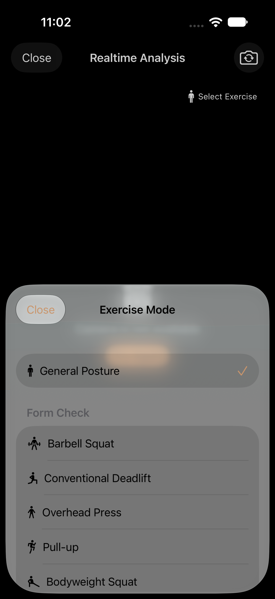
Historical capture index source: 443a32ca4fe8b79d644b36853eaa7662e7a57606 · original entry
regular · screen-0-1320x2868-P03 General Posture restored_0_EF830F5D-0717-43C7-AE88-9215A5B720FD.png
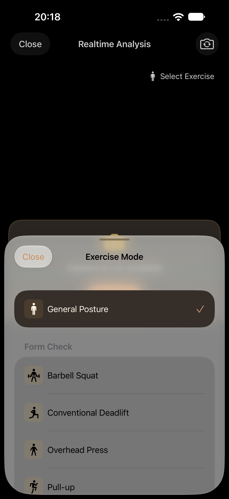
Source 23fa2883 · PostureVisualAuditTests/testP02RealtimeFallbackAndP03ExerciseSelection() · 1320×2868 px · AX hierarchy
regular · screen-0-1320x2868-P03 barbell squat selection retained on reopen_0_BCDC93B2-747B-4E27-B4CE-C76019F812C8.png
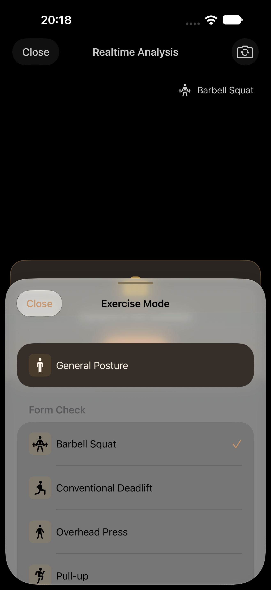
Source 23fa2883 · PostureVisualAuditTests/testP02RealtimeFallbackAndP03ExerciseSelection() · 1320×2868 px · AX hierarchy
regular · screen-0-1320x2868-P03 General Posture selected_0_F24D41D1-F923-4E9B-B95D-143AB1055DE8.png

Source 23fa2883 · PostureVisualAuditTests/testP02RealtimeFallbackAndP03ExerciseSelection() · 1320×2868 px · AX hierarchy
regular · screen-0-1320x2868-P03 MAX final exercise selected on reopen_0_13F46913-6715-419A-AB14-0F64AFFEAC63.png
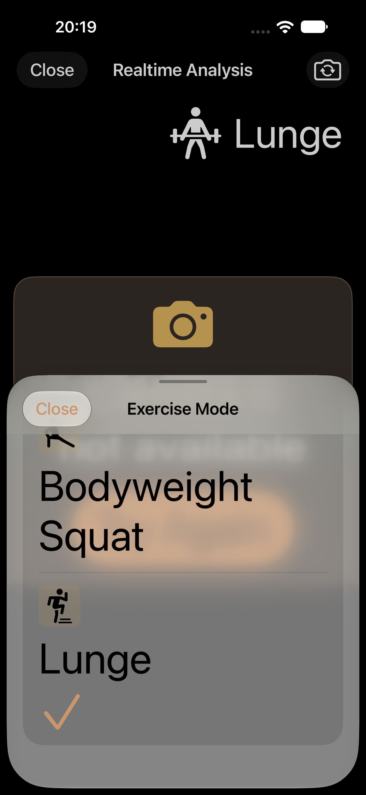
Source 23fa2883 · PostureVisualAuditTests/testP03ExerciseListAtMaximumAccessibilitySize() · 1320×2868 px · AX hierarchy
regular · screen-0-1320x2868-P03 MAX final exercise reachable by scrolling_0_3A0350AC-6D94-4AF1-ADD8-7CE1C272588D.png
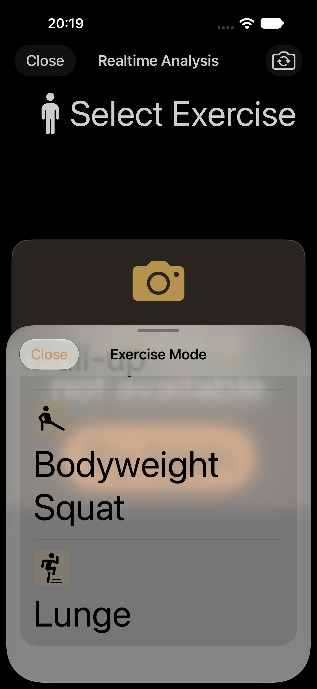
Source 23fa2883 · PostureVisualAuditTests/testP03ExerciseListAtMaximumAccessibilitySize() · 1320×2868 px · AX hierarchy
regular · screen-0-1320x2868-P03 MAX General Posture and first exercise_0_BC46BCB9-AC5B-4B43-A9C8-0661ACC4B0DD.png
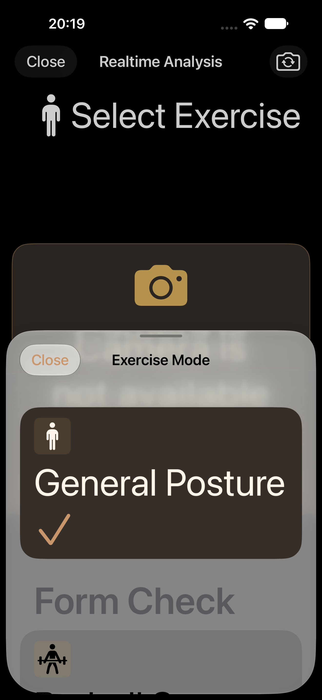
Source 23fa2883 · PostureVisualAuditTests/testP03ExerciseListAtMaximumAccessibilitySize() · 1320×2868 px · AX hierarchy
regular · screen-0-1320x2868-P03 MAX final exercise selected on reopen_0_C449CEBC-60C6-4419-9C1F-A76A1BF16554.png
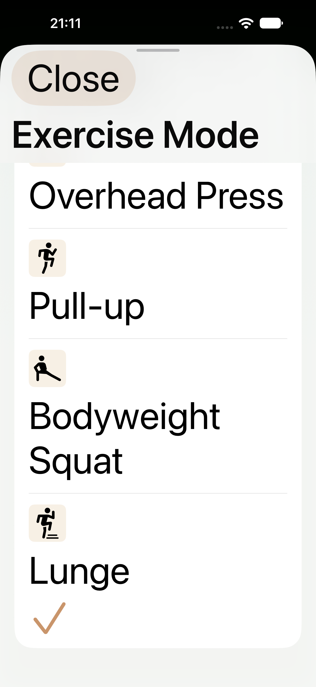
Source d6ac · PostureVisualAuditTests/testP03ExerciseListAtMaximumAccessibilitySize() · 1320×2868 px · AX hierarchy
regular · screen-0-1320x2868-P03 MAX final exercise reachable by scrolling_0_C8D0D589-1CB1-4A49-8FD8-51CEE1F57276.png
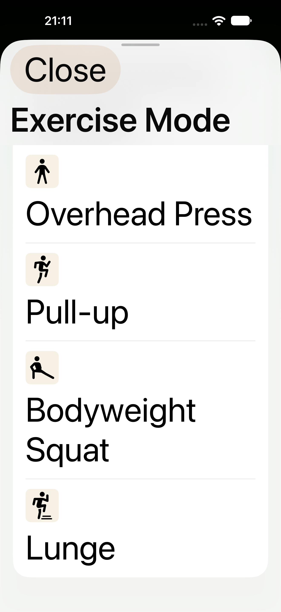
Source d6ac · PostureVisualAuditTests/testP03ExerciseListAtMaximumAccessibilitySize() · 1320×2868 px · AX hierarchy
regular · screen-0-1320x2868-P03 MAX General Posture and first exercise_0_419DA47F-2F02-4975-8D4E-6D448EF18AB1.png
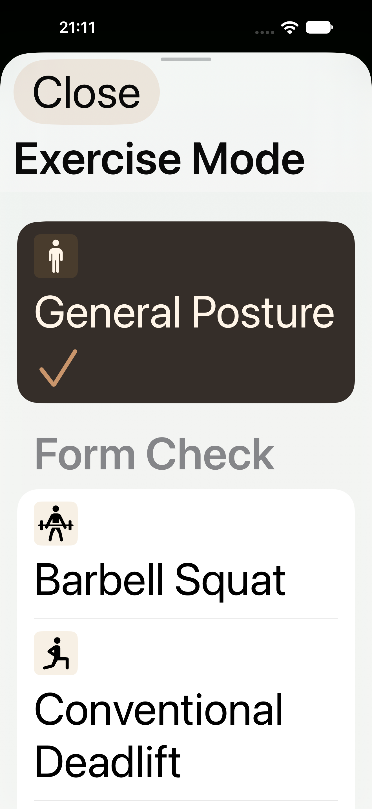
Source d6ac · PostureVisualAuditTests/testP03ExerciseListAtMaximumAccessibilitySize() · 1320×2868 px · AX hierarchy
ipad · before
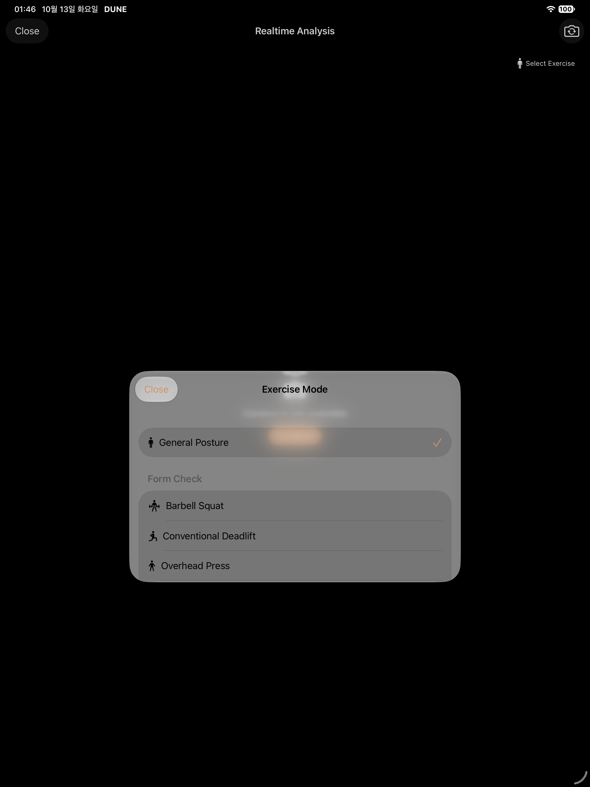
Historical capture index source: 443a32ca4fe8b79d644b36853eaa7662e7a57606 · original entry
ipad · screen-0-1512x2316-P03 General Posture restored_0_4959BF61-F01E-4975-92D1-EB4D0BEBE7E4.png
Source 6fe1f089 · PostureVisualAuditTests/testP02RealtimeFallbackAndP03ExerciseSelection() · 1512×2316 px · AX hierarchy
ipad · screen-0-1512x2316-P03 barbell squat selection retained on reopen_0_80B746C2-14DF-4028-8839-CFDE35816BF8.png
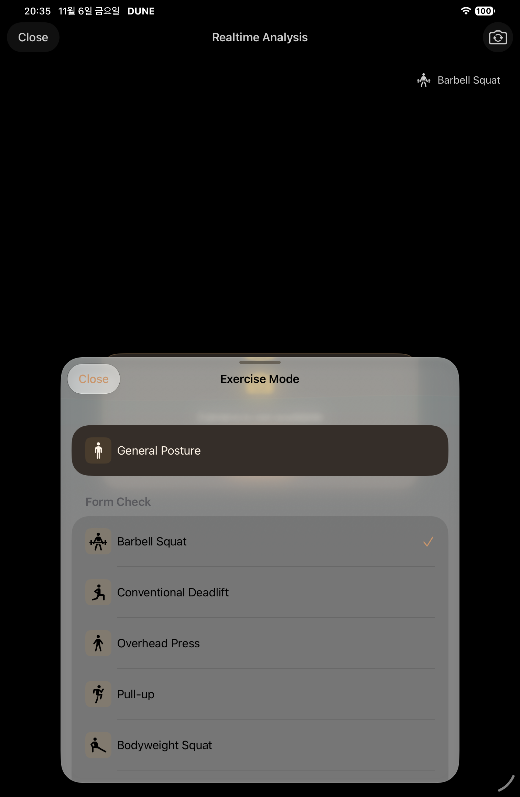
Source 6fe1f089 · PostureVisualAuditTests/testP02RealtimeFallbackAndP03ExerciseSelection() · 1512×2316 px · AX hierarchy
ipad · screen-0-1512x2316-P03 General Posture selected_0_5A3D4B13-EFB1-4D45-AF64-8512FE15B4F9.png

Source 6fe1f089 · PostureVisualAuditTests/testP02RealtimeFallbackAndP03ExerciseSelection() · 1512×2316 px · AX hierarchy
duo · before
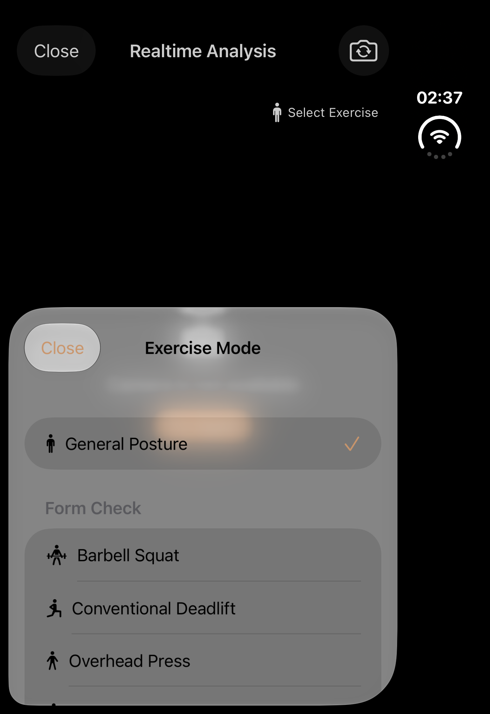
Historical capture index source: 443a32ca4fe8b79d644b36853eaa7662e7a57606 · original entry
duo · P03 General Posture selected
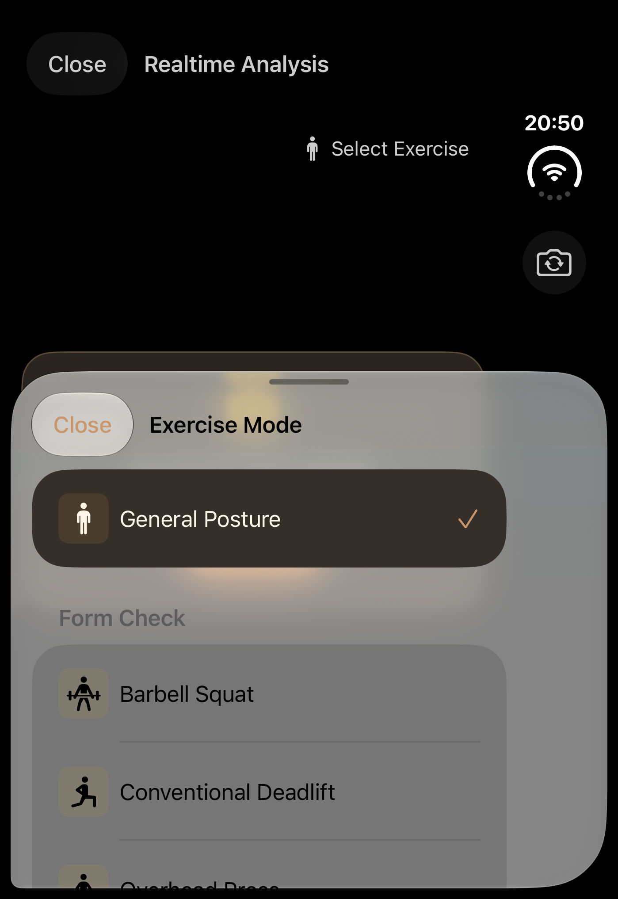
Source 6fe1f089 · PostureVisualAuditTests/testP02RealtimeFallbackAndP03ExerciseSelection() · 1398×2034 px · AX hierarchy
duo · P03 barbell squat selection retained on reopen
Source 6fe1f089 · PostureVisualAuditTests/testP02RealtimeFallbackAndP03ExerciseSelection() · 1398×2034 px · AX hierarchy
duo · P03 General Posture restored
Source 6fe1f089 · PostureVisualAuditTests/testP02RealtimeFallbackAndP03ExerciseSelection() · 1398×2034 px · AX hierarchy
duo-open · before
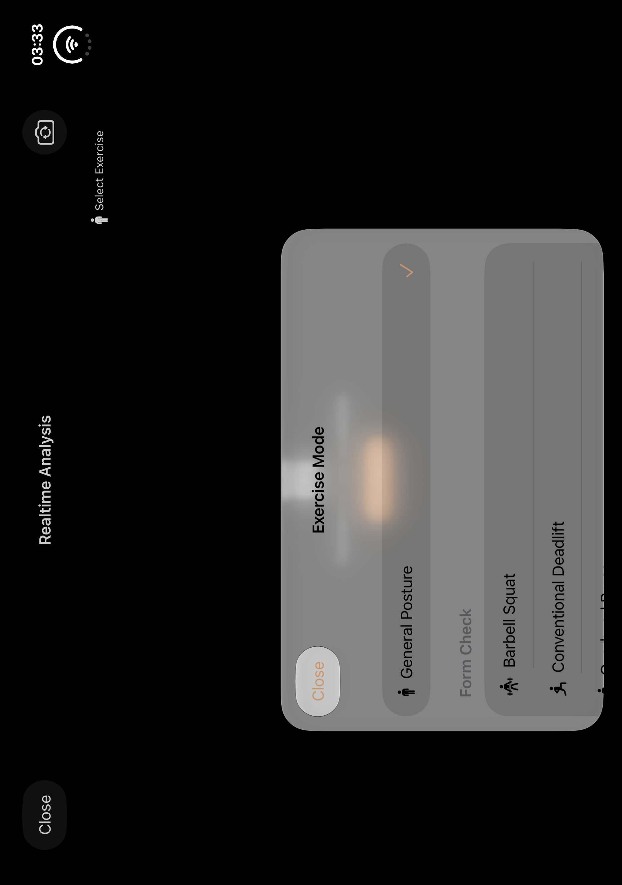
Historical capture index source: 443a32ca4fe8b79d644b36853eaa7662e7a57606 · original entry
duo-open · P03 General Posture selected
Source d6ac · PostureVisualAuditTests/testP02RealtimeFallbackAndP03ExerciseSelection() · 2853×2007 px · AX hierarchy
duo-open · P03 barbell squat selection retained on reopen
Source d6ac · PostureVisualAuditTests/testP02RealtimeFallbackAndP03ExerciseSelection() · 2853×2007 px · AX hierarchy
duo-open · P03 General Posture restored
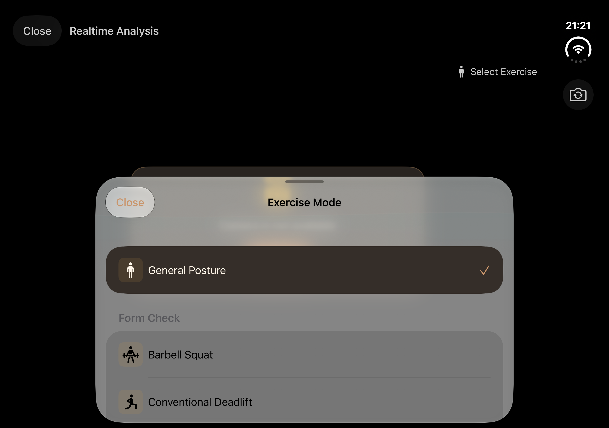
Source d6ac · PostureVisualAuditTests/testP02RealtimeFallbackAndP03ExerciseSelection() · 2853×2007 px · AX hierarchy